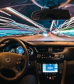
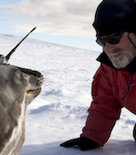
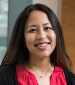

The Kraw Lecture Series on Science and Technology
The Kraw Lecture Series in Silicon Valley is made possible by a generous gift from UC Santa Cruz alumnus George Kraw (Cowell '71, history and Russian literature). The lecture series features acclaimed UC Santa Cruz scientists and technologists who are grappling with some of the biggest questions of our time.
These talks are free and open to the public
Our Kraw Lecture Series is so fantastic, we want to bring it right to you via live streaming. If you aren't able to join us in person the night of the event, you can now stream the lectures and join in the conversation via online comments. Lecture and live stream typically begin at 7 p.m.
-
October 28, 2019
Adam Millard-Ball
Mean Streets—Self-driving Car Gridlock?Self-driving cars are poised to create the largest upheaval in transportation planning since the arrival of the automobile. Join the conversation on October 28.Self-driving cars are coming to your neighborhood, and your commute, but what are the downsides to this intersection of technology and human behavior? Adam Millard-Ball is at the forefront of efforts to identify problems before they hit our streets. His latest research reveals that autonomous vehicles will snarl inner-city traffic by "cruising" to avoid paying hefty fees to park. Previous work suggests that these risk-averse vehicles will create a pedestrian utopia that will slow urban traffic to a crawl.UC Santa Cruz Silicon Valley Campus
3175 Bowers Avenue, Santa Clara
-
June 18, 2019

Anthony Aguirre
Where Did it All Come From, and Where is it All Going?The physical universe, Aguirre will argue, is made of matter (or energy) and of order (or information). Aguirre will trace the 13.8 billion year history of this matter/energy told by modern cosmology, as it has developed into ever-more sophisticated order and structure: galaxies and their arrangement, stars, planets, life, and very recently and locally, civilization. The survival of civilization—and life itself—through the coming century is not assured, but if it continues, what could its future look like over thousands or millions of years? No one knows, but touring topics from fundamental physics to the nature of intelligence, Aguirre will lay out some of the possibilities.
We are delighted to announce the addition of an open house for our SVLink Incubator–Accelerator to our June 18 Kraw Lecture. SVLink serves nearly 20 UC and UC Santa Cruz-affiliated early stage startups at our Silicon Valley campus. There, they receive mentorship and entrepreneurial support in developing proof-of-product, identifying addressable markets, and engaging potential customers and angel investors. SVLink is just that—a link between the innovative UC Santa Cruz research and the market engine of Silicon Valley. Join us from 4:30–7 p.m. to meet our entrepreneurs and learn about their exciting new businesses. Then stick around for the Kraw Lecture.
UC Santa Cruz Silicon Valley Campus
3175 Bowers Avenue, Santa Clara
-
April 16, 2019
Daniel Costa & Caroline Casey
From the Beach to the Sea: How Technology Enables Us to Understand Marine MammalsDaniel Costa, a pioneer in the development and use of electronic tags, will discuss how advances in technology that allow precise tracking of marine mammals’ movement leads to better understanding of their behavior and their response to climate impacts on habitats. Ph.D. candidate Caroline Casey studies the evolution of communication between male northern elephant seals. Vocalizations, which are used to drive off would-be rivals, have changed over generations from geographic dialects to individualized and more complex calls.
UC Santa Cruz Silicon Valley Campus
3175 Bowers Avenue, Santa Clara
-
March 19, 2019

Sandra Faber
Cosmic Knowledge and the Future of the Human RaceModern astronomy is telling us the story of our cosmic origins—how the Galaxy was assembled, how the Sun and Earth were formed, and where the chemical elements came from that comprise our bodies. We can now use this knowledge of our cosmic past to predict our cosmic future, and it looks bright ahead. We humans have been given the most precious gift of all, cosmic time—nearly a billion years of it. The challenge is clear: what will we do with it? National Medal of Science winner Sandra Faber will describe how the profound insights of cosmology are shaping the new Earth Futures Institute at UC Santa Cruz, which is grappling with this cardinal question.
UC Santa Cruz Silicon Valley Campus
3175 Bowers Avenue, Santa Clara -
Feb 20, 2019
Angela Brooks
New Approaches to Treating Cancer Through RNA AnalysisAngela Brooks, an expert in the analysis of RNA sequencing data, is studying the role of RNA splicing aberrations in cancer. RNA splicing is an editing process that enables one gene to produce several different protein molecules. Mutations in the genes that regulate splicing are common in cancer cells. To investigate the effects of these mutations, Brooks and her team are developing the experimental and computational tools needed to directly assess the RNA output of cancer cells and understand how changes in RNA processing affect cell function. This research could lead to novel approaches for treating cancer and other diseases in which splicing is abnormal.
UC Santa Cruz Silicon Valley Campus
3175 Bowers Avenue, Santa Clara
-
Jan 23, 2019

David Deamer
Assembling Life: How Can Life Begin on Earth and Other Habitable Planets?Our knowledge of how life on Earth began is incomplete. While some pieces of the puzzle are firmly established by the laws of chemistry and physics, there is still conjecture about what the Earth was like four billion years ago, based on reasonable extrapolations from observing today's Earth. David Deamer's research tests the hypothesis that hydrothermal fresh water pools associated with volcanic land masses are a plausible site for life to begin. Deamer will discuss how conditions in volcanic regions like Kamchatka, Iceland and Hawaii could yield clues about the origin of life in a fresh water environment—and implications for the search for life on Mars and icy moons like Enceladus and Europa.
UC Santa Cruz Silicon Valley Campus
3175 Bowers Avenue, Santa Clara
Each lecture will be videotaped and archived here.
Questions? Contact UC Santa Cruz Special Events specialevents@ucsc.edu or (831) 459-5003.